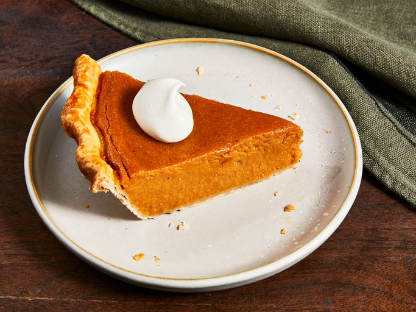

Sweet Potato Pie

Description
This sweet potato pie recipe was shared with me by a special friend in Atlanta, GA. It has long been a favorite,
and everyone who tastes it says it is the best they've ever had.
There's nothing like a freshly baked sweet potato pie to usher in the holiday season. The autumnal dessert just
tastes like home, doesn't it? This top-rated sweet potato pie recipe, which is subtly spiced with ingredients
you probably already have on hand, has been beloved by the Allrecipes community for decades.
Learn how to make, store, freeze, and serve the best sweet potato pie of your life with this community favorite
recipe.
Ingredients
- Sweet potato: This recipe calls for a pound of whole sweet potatoes. Fresh produce will
give you the deepest, richest flavor. If you're in a rush, you can substitute canned sweet potatoes (just be
sure to drain them first).
- Butter: Like so many baked goods, butter is essential to sweet potato pie. It adds
moisture, flavor, and texture to the custard filling.
- Sugar: Obviously, granulated sugar adds sweetness. It also helps keep the pie filling soft
by locking in moisture.
- Milk: Whole milk serves as the liquid base that's essential for dissolving the dry
ingredients and creating a cohesive filling. It also adds creamy flavor and texture.
- Eggs: Traditional sweet potato pie has a custard filling, which means the filling relies on
eggs (particularly the yolks) to bind the ingredients together. Make sure to allow the eggs to come to room
temperature before incorporating them into the mixture.
- Cinnamon, Nutmeg, and Vanilla: Vanilla extract and warming spices like cinnamon and nutmeg
are responsible for the cozy flavor that you likely associate with sweet potato pie. For extra flavor,
consider adding a touch of ginger or allspice.
- Unbaked Pie Crust: Use our top-rated Butter Flaky Pie Crust for guaranteed delicious
results. Of course, a frozen or refrigerated crust will work in a pinch.
Steps
- Boil and drain the sweet potatoes, then peel off the skins.
- Use a hand mixer or blender to combine the sweet potato flesh with the other ingredients.
- Bake the mixture in the unbaked pie crust and bake until a knife or toothpick comes out clean.
Return to the main page